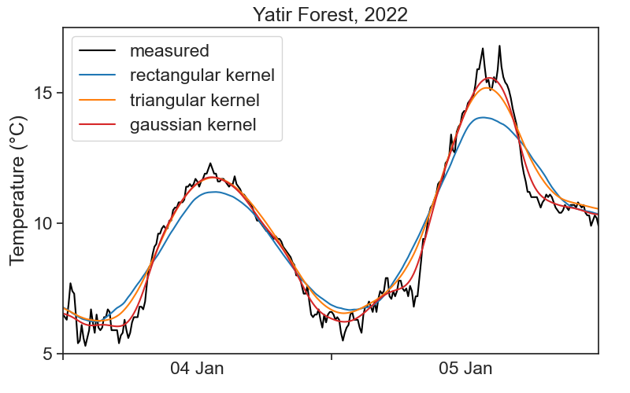

This is the temperature for the Yatir Forest, between 2 and 5 of January 2022. Data (download .csv here) is in intervals of 10 minutes, and was downloaded from the Israel Meteorological Service.
import stuff
import numpy as npimport matplotlib.pyplot as pltimport pandas as pdfrom matplotlib.dates import DateFormatterimport matplotlib.dates as mdatesimport datetime as dtimport matplotlib.ticker as tickerimport osimport warningsimport scipy# Suppress FutureWarningswarnings.simplefilter(action='ignore', category=FutureWarning)import seaborn as snssns.set(style="ticks", font_scale=1.5) # white graphs, with large and legible letters# %matplotlib widget
define useful functions
# dirty trick to have dates in the middle of the 24-hour period# make minor ticks in the middle, put the labels there!# from https://matplotlib.org/stable/gallery/ticks/centered_ticklabels.htmldef centered_dates(ax): date_form = DateFormatter("%d %b") # %d 3-letter-Month# major ticks at midnight, every day ax.xaxis.set_major_locator(mdates.DayLocator(interval=1)) ax.xaxis.set_major_formatter(date_form)# minor ticks at noon, every day ax.xaxis.set_minor_locator(mdates.HourLocator(byhour=[12]))# erase major tick labels ax.xaxis.set_major_formatter(ticker.NullFormatter())# set minor tick labels as define above ax.xaxis.set_minor_formatter(date_form)# completely erase minor ticks, center tick labelsfor tick in ax.xaxis.get_minor_ticks(): tick.tick1line.set_markersize(0) tick.tick2line.set_markersize(0) tick.label1.set_horizontalalignment('center')
We see that the temperature curve has a rough profile. Can we find ways of getting smoother curves?
11.1 convolution
Convolution is a fancy word for averaging a time series using a sliding window. We will use the terms convolution, running average, and rolling average interchangeably. See the animation below. We take all temperature values inside a window of width 500 minutes (51 points), and average them with equal weights. The weights profile is called kernel.
The pink curve is much smoother than the original! However, the running average cannot describe sharp temperature changes. If we decrease the window width to 200 minutes (21 points), we get the following result.
There is a tradeoff between the smoothness of a curve, and its ability to describe sharp temporal changes.
11.2 kernels
We can modify our running average, so that values closer to the center of the window have higher weights, and those further away count less. This is achieved by changing the weight profile, or the shape of the kernel. We see below the result of a running average using a triangular window of base 500 minutes (51 points).
Things can get as fancy as we want. Instead of a triangular kernel, which has sharp edges, we can choose a smoother gaussian kernel, see the difference below. We used a gaussian kernel with 60-minute standard deviation.
The definition of a convolution between signal f(t) and kernel k(t) is
(f * k)(t) = \int f(\tau)k(t-\tau)d\tau.
The expression f*k denotes the convolution of these two functions. The argument of k is t-\tau, meaning that the kernel runs from left to right (as t does), and at every point the two signals (f and k) are multiplied together. It is the product of the signal with the weight function k that gives us an average. Because of -\tau, the kernel is flipped backwards, but this has no effect to symmetric kernels, like to ones in the examples above. Finally, the actual running average is not the convolution, but
\frac{(f * k)(t)}{\displaystyle \int k(t)dt}.
Whenever the integral of the kernel is 1, then the convolution will be identical with the running average.
11.4 numerics
Running averages are very common tools in time-series analysis. The pandas package makes life quite simple. For example, in order to calculate the running average of temperature using a rectangular kernel, one writes:
df['temp_smoothed'] = ( df['TD'].rolling(window='500min', min_periods=50# comment this to see what happens ) .mean() )fig, ax = plt.subplots(figsize=(8,5))ax.plot(df['TD'], color='black')ax.plot(df['temp_smoothed'], color='xkcd:hot pink')ax.set(**plot_settings)centered_dates(ax)
The pink curve looks smooth, but why does it lag behind the data?! What’s going on?
11.4.1 7-day average of COVID-19 infections
During the COVID-19 pandemic, we would see graphs like this all the time in the news:
import COVID-19 data for Israel, process it
# data from https://health.google.com/covid-19/open-data/raw-data?loc=IL# define the local file pathlocal_file_path ='COVID_19_israel.csv'# check if the local file existsif os.path.exists(local_file_path):# if the local file exists, load it covid_IL = pd.read_csv(local_file_path, parse_dates=['date'], index_col='date')else:# if the local file doesn't exist, download from the URL url ="https://storage.googleapis.com/covid19-open-data/v3/location/IL.csv" covid_IL = pd.read_csv(url, parse_dates=['date'], index_col='date')# save the downloaded data to the local file for future use covid_IL.to_csv(local_file_path)df_covid = covid_IL['new_confirmed'].to_frame()df_covid['7d_avg'] = df_covid['new_confirmed'].rolling(window='7D').mean()
Take a look at the moving average next to the question mark. How can it be that high, when all the bars around that date are lower? Is the calculation right?
The answer is that the result of the moving average is assigned to the right-most date in the running window. This is reasonable for COVID-19 cases: for a given day, I can only calculate a 7-day average based on past values, I don’t know what the future will be.
There is a simple way of assigning the result to the center of the window:
df_covid['7d_avg_center'] = ( df_covid['new_confirmed'] .rolling(window='7D', center=True) # THIS .mean() )
window_width is an integer, number of points in your window
std_gaussian is the standard deviation of your gaussian, measured in sample points, not time!
For instance, if we have measurements every 10 minutes, and our window width is 500 minutes, then window_width = 500/10 + 1 (first and last included). If we want a standard deviation of 60 minutes, then std_gaussian = 6. The gaussian kernel will look like this:
Sorry, there is not definite answer here… It really depends on your data and what you need to do with it. See below a comparison of all examples in the videos above.

One important question you need to ask is: what are the time scales associated with the processes I’m interested in? For example, if I’m interested in the daily temperature pattern, getting rid of 1-minute-long fluctuations would probably be ok. On the other hand, if we were to smooth the signal so much that all that can be seen are the temperature changes between summer and winter, then my smoothing got out of hand, and I threw away the very process I wanted to study.
All this is to say that you need to know in advance a few things about the system you are studying, otherwise you can’t know what is “noise” that can be smoothed away.